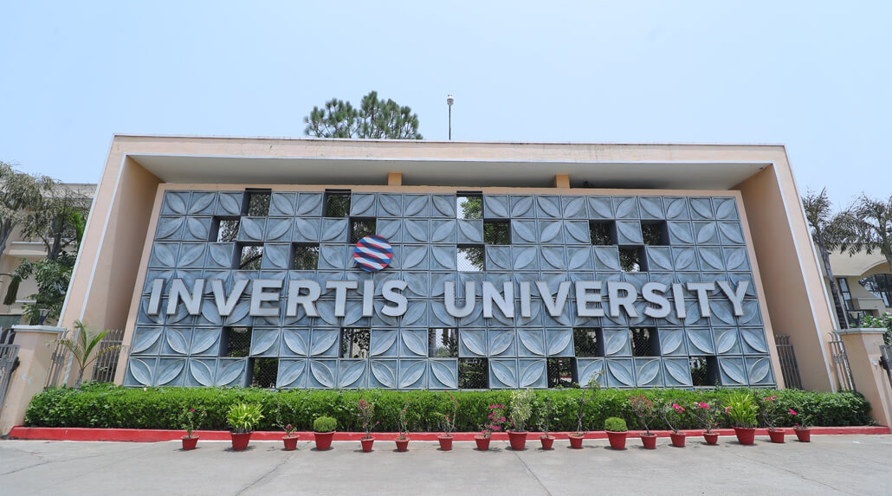
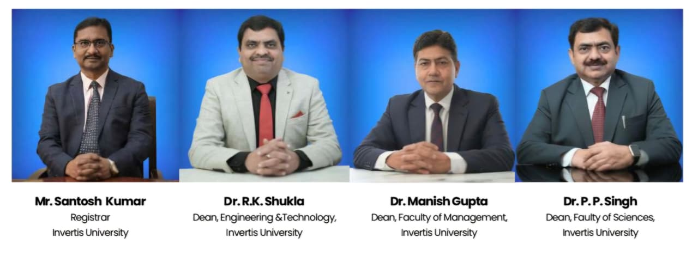
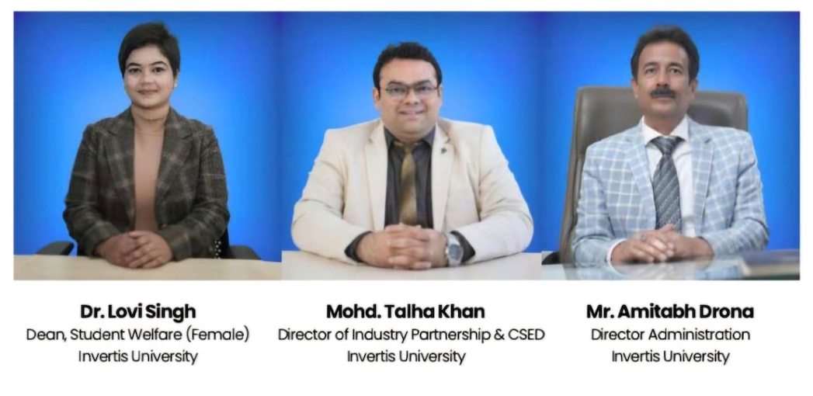

Invertis University, Bareilly is a private university offering a wide range of undergraduate, postgraduate and professional programs. The university focuses on academic learning, practical skills, innovation and overall student development.
With various courses, modern learning facilities and opportunities for extracurricular activities, Invertis provides students with an environment to develop their knowledge and career skills.
Explore our website to learn more about Invertis University, its courses, campus, facilities and contact information.
Dr. Umesh Gautam is the Chancellor of Invertis University, Bareilly. He is associated with the university’s vision, leadership and
development, with a focus on providing quality education and opportunities for students.
Prof. (Dr.) Y.D.S. Arya is the Vice-Chancellor of Invertis University, Bareilly. He oversees academic and administrative activities and works
towards strengthening teaching, learning and overall student development.

Dr. Manish Sharma is associated with the leadership and administration of Invertis University. The Pro-Chancellor supports the university's vision, institutional
development and efforts to provide students with quality education and career-oriented opportunities.

The Registrar looks after important administrative and academic coordination of the university. The role includes maintaining official records, supporting university
operations and coordinating various academic and administrative activities.
The Dean provides academic leadership for a particular school or faculty. The Dean helps coordinate academic programs, faculty activities and student
development while maintaining academic standards.

The Head of Department (HOD) manages the day-to-day academic activities of a department. The HOD coordinates with faculty members, supports students and helps ensure that teaching, practical
learning and departmental activities run smoothly.
